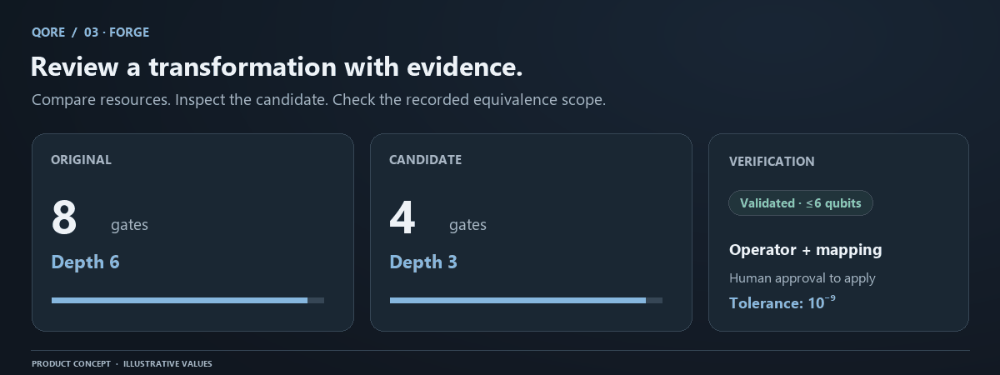

Forge: compiler candidates and verification
Forge is QORE's compiler review surface. It generates a candidate circuit, compares resource metrics, and records a numerical equivalence assessment. The user decides whether to ap
Conceptual workflow. Numerical evidence and save status come from your actual QORE session.
Forge is QORE's compiler review surface. It generates a candidate circuit, compares resource metrics, and records a numerical equivalence assessment. The user decides whether to apply the candidate. Keeping generation, verification, and approval separate makes the transformation inspectable instead of treating a successful compiler response as proof of correctness.

Prepare a meaningful comparison
Open a supported circuit and make sure the source is saved or otherwise preserved. Record the question you are asking: remove redundant gates, compare optimization levels, or inspect a normalized basis. A short circuit with deliberate redundancy is a good first test because the expected behavior can be checked independently.
from qiskit import QuantumCircuit
qc = QuantumCircuit(2, 2)
qc.h(0)
qc.h(0)
qc.x(1)
qc.x(1)
qc.cx(0, 1)
qc.cx(0, 1)
qc.measure(0, 0)
qc.measure(1, 1)
The pairs in the unitary prefix cancel, so its net action is identity. Forge can expose how a compiler represents that fact. Do not assume that every realistic circuit has the same amount of removable redundancy.
Candidate generation
Choose optimization level 0, 1, 2, or 3 and a seed. The backend parses the source, separates the unitary prefix from terminal measurements, and transpiles the prefix into the supported u and cx basis. It then reattaches the measurement suffix with the original destinations.
Optimizing only the prefix matters. A measurement-aware pass may remove a final phase operation without changing computational-basis counts, but that can alter the stronger full-operator property that QORE checks. Preserving the prefix's action makes the verification claim clearer.
The current Forge does not configure a physical coupling map, device calibration, or hardware execution target. It is a basis and optimization experiment. A higher level can cost more compilation time and does not guarantee fewer gates, lower depth, or a better result under every metric.
Read metrics using one convention
Gate count counts unitary instructions and excludes measurement and barrier. Two-qubit count includes exactly two-qubit unitary instructions. A CCX is one three-qubit instruction before decomposition, so converting it into a one-/two-qubit basis can increase the apparent gate count while preserving semantics.
Depth follows the recorded circuit-depth convention, including measurements and excluding barriers. Compare the original and candidate under the same convention. An absolute or relative resource difference is not a prediction of wall-clock speed on an unconfigured quantum device.
If an original metric is zero, a relative percentage may be undefined rather than infinite. Read the numerical before and after values. A candidate should be judged according to the intended objective, not just a green reduction badge.
Operator comparison
For circuits of up to six qubits, QORE constructs both full unitary operators. It aligns one global phase using their overlap and computes the maximum absolute elementwise residual. Validation succeeds when that residual is at most 1e-9 and register sizes and terminal measurement mappings match.
This compares every basis input rather than only the default all-zero state. Two different circuits can produce the same output for one input and still fail full-operator comparison. A histogram match at finite shots is a weaker and statistically different observation.
The response records method, qubit count, operator dimension, maximum error, tolerance, process fidelity, global-phase difference, and mapping evidence where available. Process fidelity is supporting numerical evidence; the actual acceptance check is the maximum residual after phase alignment.
Understand every status
| Status | Meaning |
|---|---|
validated |
Recorded operator and mapping checks passed within scope |
failed |
A checked structural or numerical property differed |
unavailable |
The check was outside the supported scope, including more than six qubits |
inconclusive |
The numerical comparison could not complete |
Unavailable and inconclusive are not passes. A ten-qubit simulation may be supported while its full-operator verification is unavailable. Keep these different caps visible when reporting an experiment.
Review and apply
Inspect candidate source and the circuit representation. Read warnings and validation, then compare the terminal mapping. Applying the candidate is explicit. The assistant cannot approve it, and a generated explanation does not replace the recorded numerical check.
Applying changes the workspace source and invalidates live results attached to the old text. Run the new circuit to obtain fresh sampled evidence. The original immutable run remains in the Ledger, so a rejected or abandoned proposal does not erase its provenance.
If you want a before/after study, save distinct experiments with the same simulation settings. Their source hashes may differ even when unitary behavior is equivalent, because hashes identify text rather than mathematics. Include optimization level and seed in the comparison record.
Common misunderstandings
A smaller circuit is not automatically faster on an unspecified device. Equal counts do not prove equal operators. A validated ideal transformation does not prove that two physical implementations have identical noise. A global phase is ignored because it does not affect the isolated circuit's observable behavior, but arbitrary relative phases are not ignored.
If verification fails, retain the original source and inspect register sizes, mapping, and numerical residual. If compilation fails, reduce the program to supported operations and check the resource limit. If validation is unavailable, report that limitation rather than describing the candidate as proven. The equivalence lesson develops these distinctions with examples.